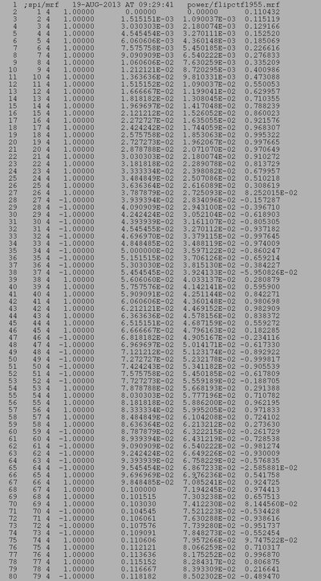
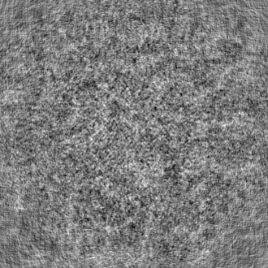

| .OPERATION: | FD | ; Filter image |
| .INPUT FILE: | rib_879 | ; Image file name (input) |
| .OUTPUT FILE: | fd_doc | ; Image file name (output) |
| .FILTER DOC FILE: | fd | ; Image file name (input) |
| INPUT IMAGE |
|---|
| rib_879 |
| DOCUMENT FILE (Truncated) |
|---|
|  |
| fd_doc |
| OUTPUT FILE 'FD' |
|---|
|  |
| fd |